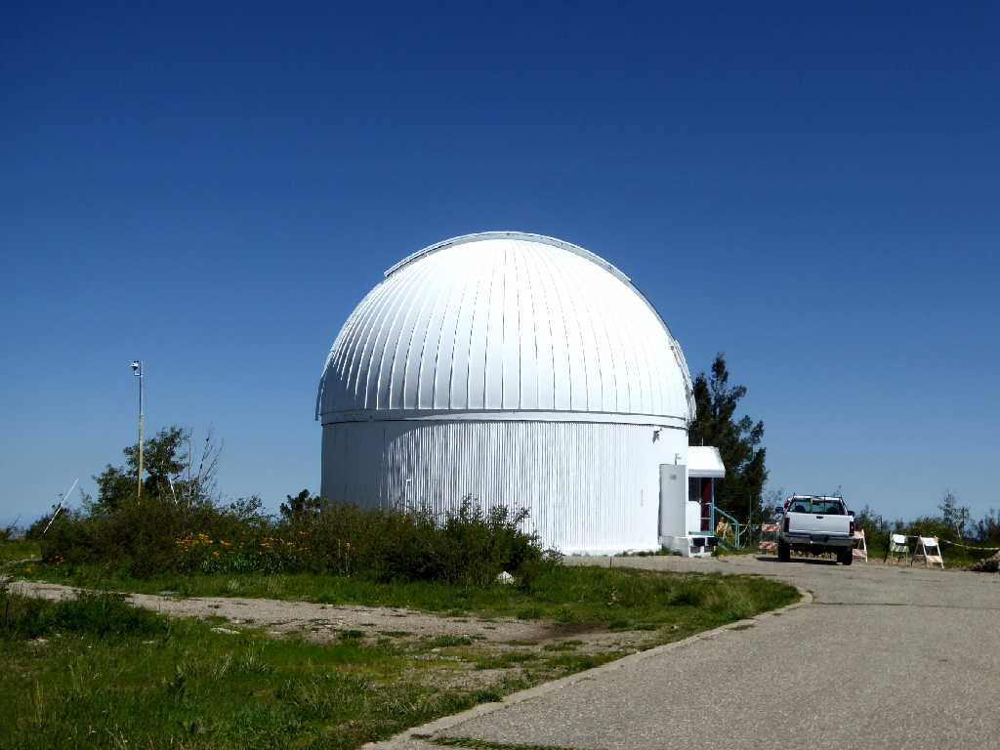
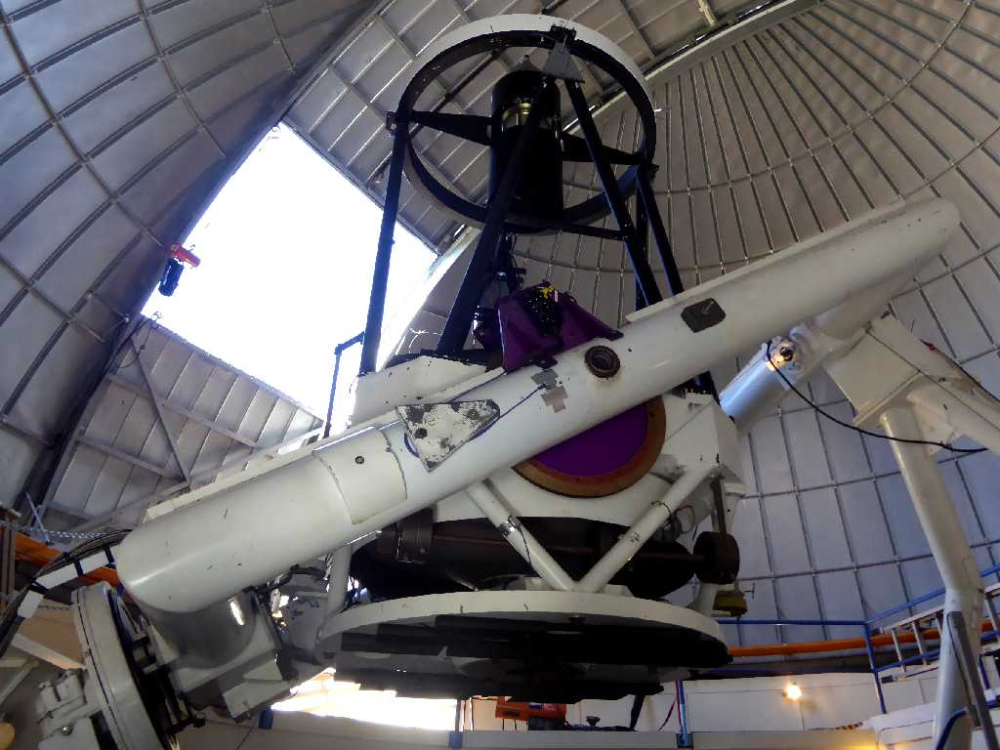
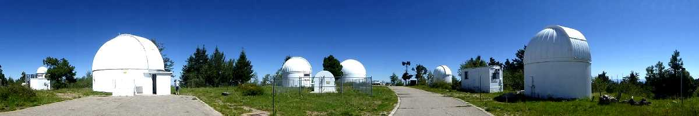
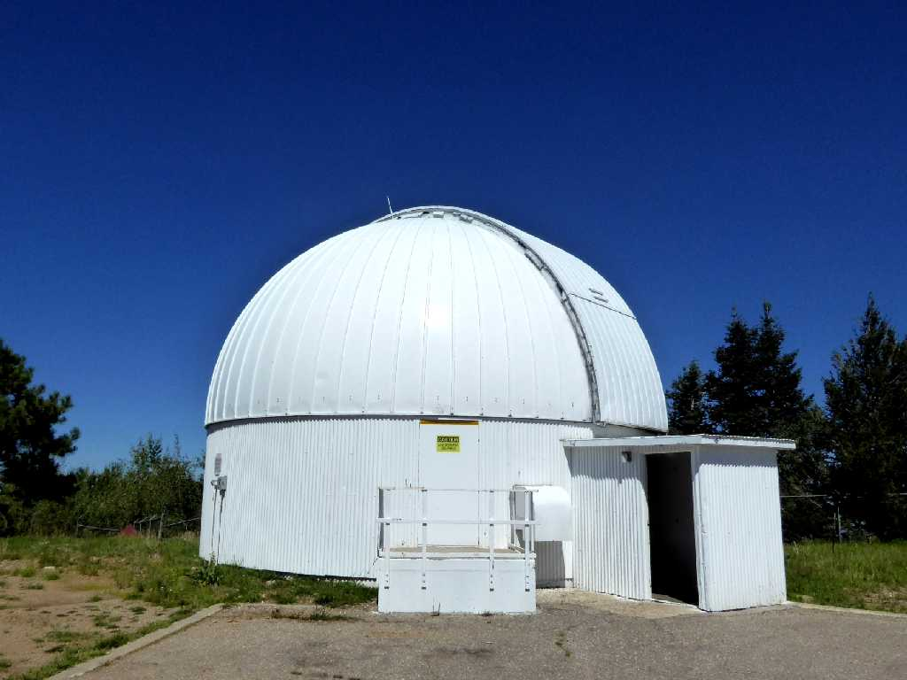
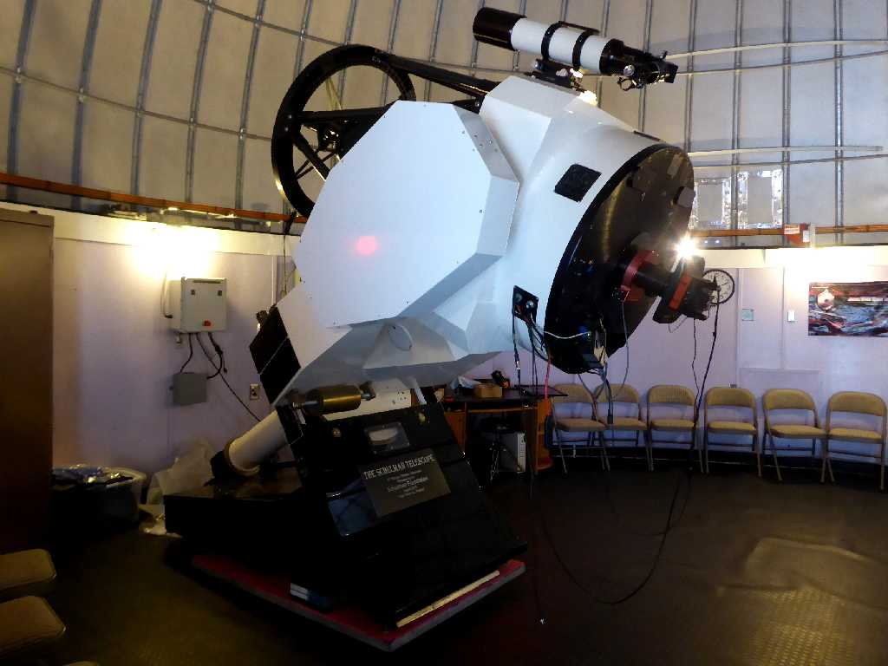
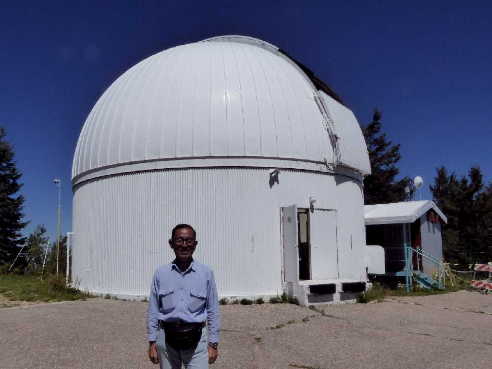

60inch Cassegrain Telescope Dome Mt. Lemmon Sky Center Observatory
レモン山スカイセンター天文台最大の６０インチ反射望遠鏡があるドーム

Catalina Sky Survey 60inch Cassegrain Telescope
６０インチ反射望遠鏡でＮＡＳＡが地球接近天体探査を行っており多数の小惑星や彗星を発見している

Mt. Lemmon Sky Center Observatory

40inch Cassegrain Telescope Dome

40inch Cassegrain Telescope

August 24 2017 Mt. Lemmon Sky Center Observatory